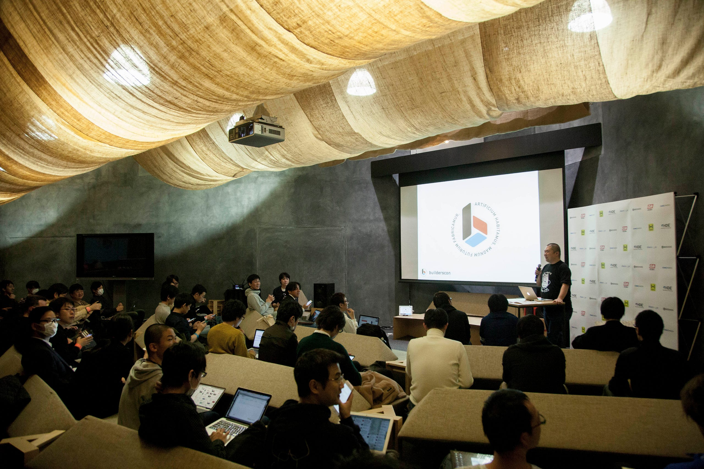
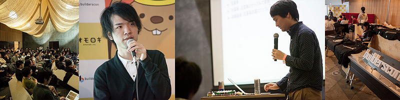
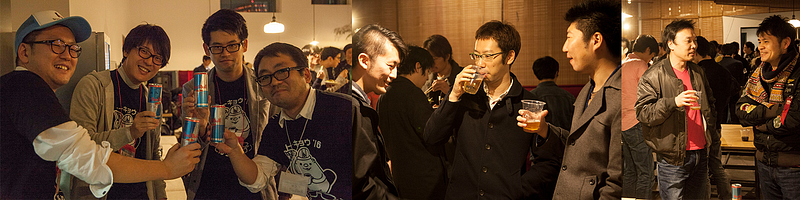
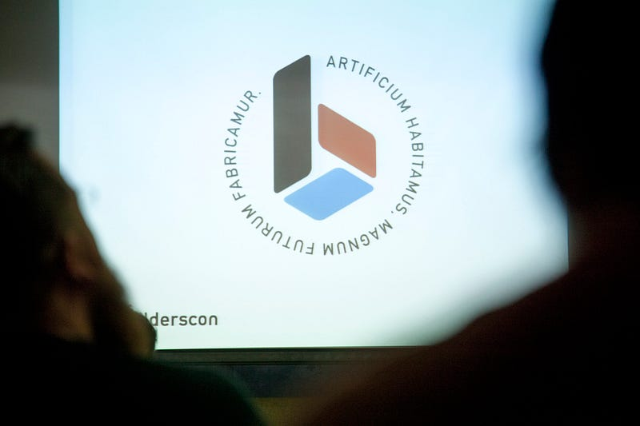
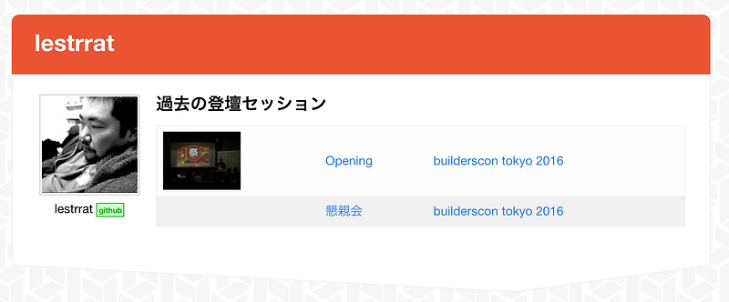
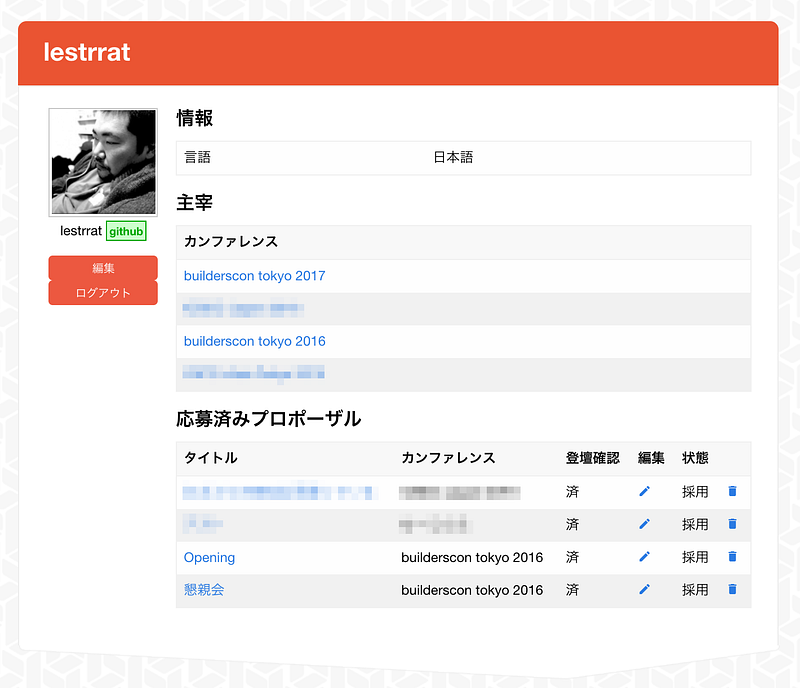
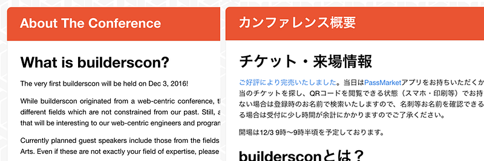

カンファレンス運営者としての自分の使命を考える。
カンファレンス運営者としての自分の使命を考える。

YAPC::Asia Tokyo等、カンファレンス運営に関わって10年以上経ってしまいました、lestrratこと牧です。カンファレンス運営をしていない時は株式会社 HDEというところで禄を食んでおります。
現在は builderscon というカンファレンスとそのまわりのエコシステムの整備をしています。この間第一回目の開催を無事終える事ができました。
Discover Something New - builderscon is a festival for those who love tech!builderscon.io

これだけ長くやっていると、カンファレンス運営をすることに疑問を抱いたり、そもそも自分の目的や使命はなんだったんだろう？と考え込んでしまった事もありました。
そのフェーズはなんとか乗り越えて今は確信を持ってカンファレンス運営に関わっています。今回のエントリでは主催者という立場からカンファレンス運営に関する自分の考え方や、自分が何をするべきだと感じているのか、などのを少し話させてもらいたいと思います。
カンファレンスを主催する目的
参加者のためのカンファレンス
カンファレンスの最終的な目標はより多くの参加者達にカンファレンスを楽しんでもらうことです（なお自分は参加者にスポンサーやスタッフ等も含めています）。皆それぞれになんらかしらの参加してよかったという気持ちで帰って行ってもらいたいですよね。

しかし他人を満足させることだけを目的にしてしまうと、自分のモチベーションが落ちてきた時に自分を奮い立たせる理由を見失ってしまいがちです。カンファレンス運営はそれなりに時間と手間のかかる仕事ですので、このモチベーションを維持するための自分なりの納得感がないと続けていくのはなかなか困難になります。自分は完全にこのどつぼにはまり、なぜ自分はこんなにも自分や自分の家族の時間を奪っていく作業を行っているのか分からなくなってしまった時期がありました。
人が行動を起こすときの理由の主語は必ず「私」から始まらないとバランスがおかしくなると自分は感じています。そこで、その悩んでいた時期に、自分とカンファレンス運営のつきあい方を変えることにしました。
自分のためのカンファレンス
すなわち、誰かのためにカンファレンスを開催するのではなく、とにかくまず自分が聞きたいと思う講義を聞ける場所を作ろう。その次に、その場所をより多くの人達とシェアできる方法を探ろう。そのような気持ちに切り替えてカンファレンスやコミュニティに向き合う事に決めました。
その後自分がなぜカンファレンスを運営するのか、自分に対する理由付けが明確になり、再び前向きにカンファレンスと向き合うことができるようになりました。
ちなみに自分の聞きたい話を聞けるカンファレンスとはなにか？を実装したのが builderscon です。buildersconのテーマは以下の通りです。
「知らなかった、を聞く」「Discover Something New」

これが僕の求める事だと言葉に落とし込めた時は自分の中で何かがゴトっと音を立てて動いた感じがしました。
「公」と「私」のバランス
付け加えるのであればあともうひとつ、主催者が「自分のため」ではなく「皆のため」という公的な精神だけでカンファレンスを続けることの弊害があると自分は感じています。それはリーダー的な位置にいる人間があまりにもサービスすると他のスタッフや協力者にもそれを強制させる無言の力が働きがちであるということです。
この点に関しては主催者は参加者の方達が無理をせずに回しておけるような仕組みを作るのが責務なのではないかと思います。このようなイベントの運営をしていくには公的な精神は必要ですが、それはあくまでプラスαと捉え、主催がそれを前提として仕組みの上で動いてはいけない、と自分は強く思っています。
主催者の役割
「箱」を作る
カンファレンスはコミュニティや文化を育む場所ではありますが、カンファレンス運営者がコミュニティや文化を作っているとは僕は思っていません。コミュニティは参加者の皆様であり、文化はその皆様が作っていくものです。運営者はあくまで「箱」の提供をしていくだけであり、強いて言えば農家の方が作物を、まっすぐ大きく育つように方向をつけていくような、そんな役割だと考えています。
ですので、僕は「コミュニティを作るには…」というような事はあまり語りたくありません。それより運営者の目線でしかできない事をやりたいと思っており、buildersconではその方向を突き詰めたいと考えて様々な下準備をしてきました。
作っている箱の話：方向性の提示
主催者にしかできない事の一つはそのカンファレンスが目指すおおまかな方向性の提示でしょう。これは主催者の責任であり、特権だと考えています。
buildersconの方向性についてはすでに軽く書いてしまいました。buildersconは「知らなかった、を聞く」場所にしていこうとしています。
buildersconで交わされる会話は「より美しいプログラムの書き方」や、「特定の環境や言語の闇の歴史」の話でもいいですが、ハードウェアの話でも問題ありません。もっと非現実的な未来技術の話でも問題ありません。buildersconという名はこの世界の今と未来を作っているbuilderの方々を集めたいからこそ選ばれたのです。
なお今後、コミュニティやエコシステムができていくにつれ、少しずつこの方向性は変化していくかもしれません。しかし変更していく方向性の提示を行う権限と責任も持っているのが主催者なのだと思っています。
方向性を提示した結果、どのようなコミュニティになっていくか、というのはコミュニティに参加していただいた方達が決めることです。主催者はその現実と方向性のすりあわせを行い、箱の枠組みを調整していくのです。
作っている箱の話：インフラストラクチャー
カンファレンスの運営は自動化をほとんどせずとも真心を込めた人の手に操作をゆだねる事によって充分実行可能です。また、既存のオンラインサービスをマッシュアップさせることによって自動化をすることも可能です。
しかしカンファレンス運営を長くやってきて、やはりなるたけ自動化された専用のシステムはあったほうがいいと考えています。
やはり手動は面倒なので自身のモチベーションを保ち続けるのにポジティブな効果をもたらすとは言えませんし、新人の参入障壁を高くします。マッシュアップも高度な技術の職人が面倒を見てくれていれば良いですが、ほとんどの場合は「いつ壊れてもおかしくないけれど、なぜか動く」タイプの仕組みになりがちです。
そこでbuildersconでは汎用的なカンファレンス運営の様々な部分の自動化の仕組みを作ることにしました。ここでいう汎用的、というのはbuilderscon以外のカンファレンスのデータも扱えるようにした、という意味です。
Contribute to conf.builderscon.io development by creating an account on GitHub.github.com
Contribute to admin.builderscon.io development by creating an account on GitHub.github.com
これまですでに一定の範囲でシステムを組んで自動化できた運営要素には以下のようなものが含まれます：
- カンファレンスの開催期間、説明、会場等の情報の管理
- カンファレンス管理者の設定
- カンファレンススタッフの設定
- セッションプロポーザルの応募、編集、審査などの行程
- トラック数に応じたタイムテーブルの自動生成
- 公式Twitterアカウントでの発信
- 開催後のブログエントリのまとめ作成
これらはひとつひとつはまだ未完成の部分も多いですが、概ね期待通り動作するまですでに実装されています。
このような仕組みは汎用的に違うカンファレンスであっても使えるはずですので、今後少しずつ他のカンファレンスや勉強会を行う方にも利用してもらいながら完成度を高めていきたいと考えています。
残念ながら今すぐ他のカンファレンスの方にも使ってもらえるクォリティの管理画面がないのですが、一緒に協力して作っていただける他のカンファレンス運営者がいたら是非声をかけて欲しいと思います。データを連動させることにより便利になることがたくさんあるはずだと考えています。
作っている箱の話：蓄積の話
buildersconというカンファレンスでこれまで開催してきた言語系のカンファレンスとは違う基軸にしつつ、汎用的なシステムを構築しているのはさらに将来の事を考えているからです。
まず「ちゃんとした」バックエンドを構築することにより、データを蓄積していき利用していくことが可能となります。例えば以下のように、一つのカンファレンス内で自分が過去に登壇したセッションをリストアップすることができます。

さらに他のカンファレンスも含めて、複数のカンファレンスを横断したバックエンドを構築できると、各登壇者が過去に参加した全てのカンファレンスのセッションをリストアップすることができます。
運営者・登壇者側の目線ではこれまで開催してきたカンファレンスや応募したセッションプロポーザルを閲覧することが可能になります。

これまで自分が関わってきたカンファレンスは焼き畑農業に近い、毎回作ってはまた全てを焼き払うというスタイルの運営をせざるを得なかったのですが、今回は1年近く細々と先にインフラを作っている時間を作れたため先行投資を行うことができました。
作っている箱の話：その他の仕組みの話
前項でインフラストラクチャーの話をしましたが、それ以外にも様々な仕組みの取り組みがあります。
例えば自分はYAPC::Asia Tokyo 2012までのネットワークまわりには常に不満を持っていました。YAPC::Asia Tokyo 2013ではその前年から田島氏にアプローチし、ネットワーク層のエンジニア達とアプリケーション層のエンジニア達の交流をはかりつつ、通常の会場では提供していただくことが不可能な高いレベルのネットワークを提供してもらうCONBUという仕組みを作ってもらえました。
先日行われた YAPC:Asia 2014 では無線ネットワーク提供が行われましたが､ CONBU というネットワークエンジニアの有志グループが協力しました｡ またCONBUの取り組みについては 当日のトーク ...update.hirochan.org
海外からの参加者への対応も常に問題となります。builderscon ではそれを念頭におき、最初からデータを全て国際化可能とする仕組みを組み込むことにしました。前述の buildersconサイトも、日本語を優先にしたブラウザと英語を優先にしたブラウザでは違う出力が自動的に生成されるようになっています。

他にもスポンサーにより満足してもらうためには継続的にスポンサーに提供をする内容について考えていく必要があります。実は以前からあたためていたアイデアがあったのですが、これを実現するにはいくつかの「仕掛け」が必要だったために例年断念していました。今度これを実現可能とするためにハッカソンを行う予定です。
他にも色々とやっています。ボランティアベースの運営の場合、このような仕組みや仕掛けをリードしていくのは主催者かそれに準ずる熱意を持っている人の責任だと考えます。
まとめ
つらつらと、自分が主催者として「これは俺がやらないといけない」と考えている事などについて書いてみました。
自分は数年スパンの目標で、なおかつ比較的大きなカンファレンスの運営を主眼に置いているので少し大げさな話になってしまっているかもしれません。ですが皆さんの運営しているコミュニティや勉強会もいつ成長していくかもしれません。その時に少しでも参考になれば嬉しいです。
リソース
Discover Something New - builderscon is a festival for those who love tech!builderscon.io